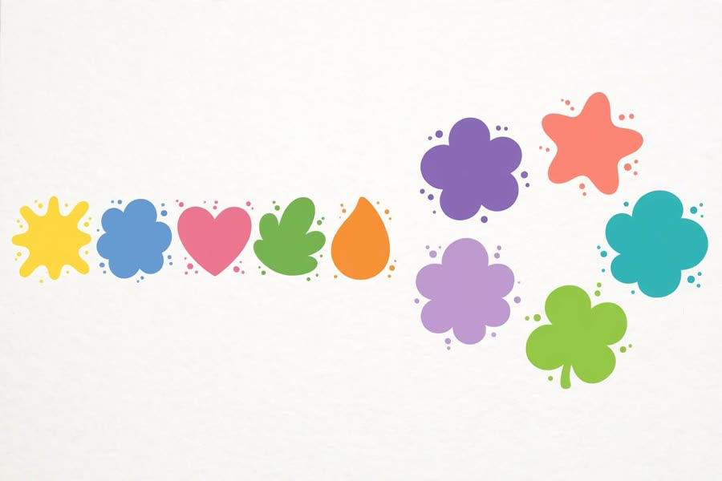

📖 剧情简介
三号开了印章蹦床乐园！同样的数量，可以摆出不同的图案！
Three opens a stampoline park! The same number can make different patterns!
🎭 角色
三号 Three、四号 Four、五号 Five
（印章蹦床乐园开张 / The stampoline park opens）
3
Three三号
Welcome to my stampoline park! Jump and make prints!
欢迎来到我的印章蹦床乐园！跳一跳，印图案！
（五号跳上去，印出五个印 / Five jumps and prints five marks）
5
Five五号
Five prints! One, two, three, four, five!
五个印！一、二、三、四、五！
Five prints! One, two, three, four, five!
3
Three三号
Now jump a different way!
换个姿势再跳一次！
（五号摆成三加二再跳 / Five arranges as three and two, then jumps again）
5
Five五号
Still five! Three and two!
还是五个！三加二！
4
Four四号
My turn! Four prints — two and two!
轮到我！四个印——二加二！
（四号印出二加二的图案 / Four prints a two-and-two pattern）
3
Three三号
Different patterns, same number!
图案不同，数量一样！

Different patterns, same number!
5
Five五号
I can see five at a glance!
我一眼就能认出五！
A
All大家
Stampolines are splatty fun!
印章蹦床真好玩！